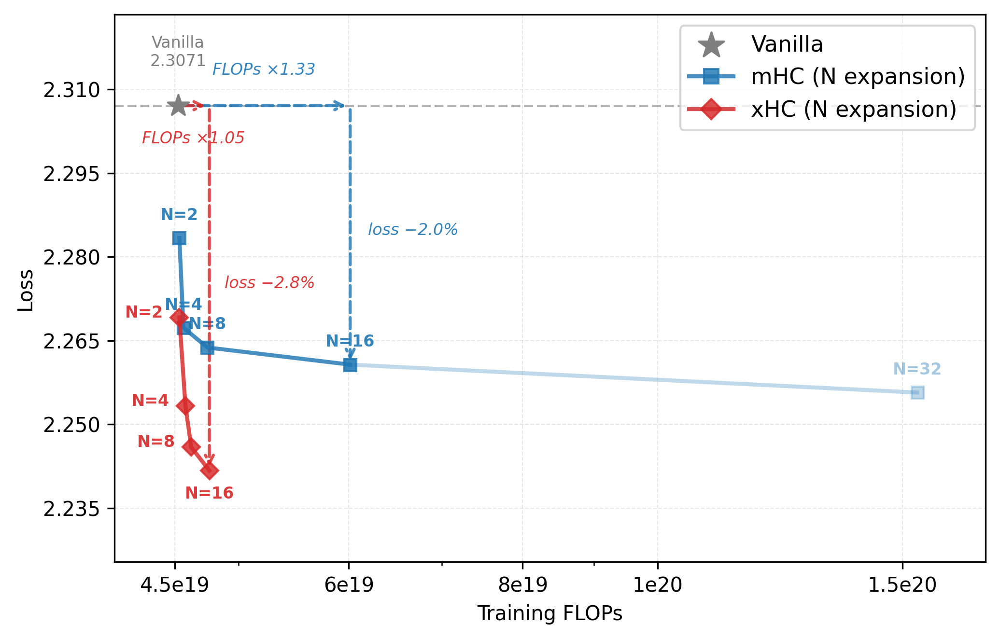
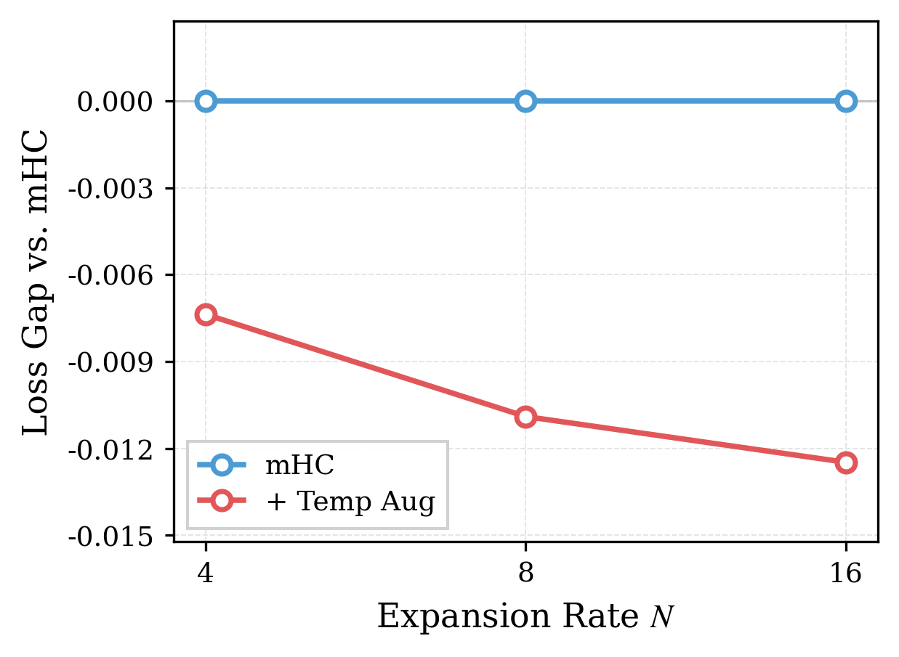
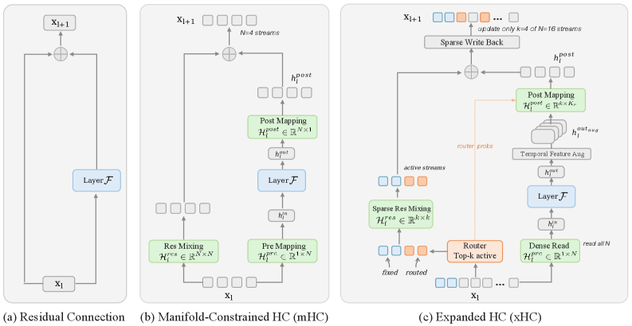
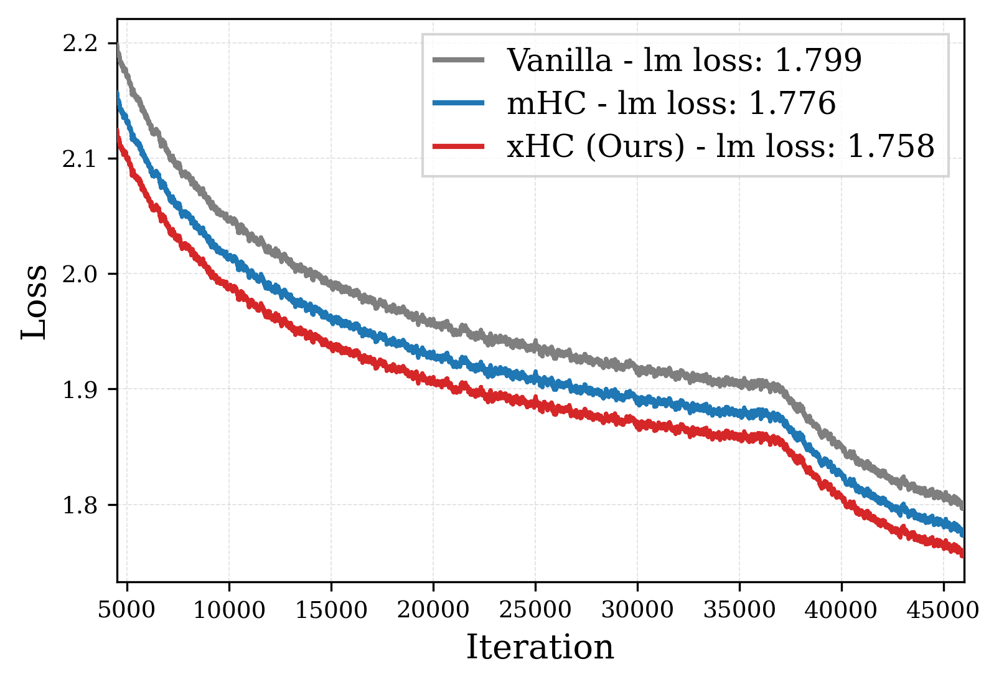

残差流（residual stream）是 Transformer 跨层传递 token 表示的主干，但多年来它基本只是一条单一恒等路径。超连接（Hyper-Connections）把它扩展成 N 条并行流，曾被认为是一条超越宽度和深度的新扩展维度。
然而现实很骨感：现有的 mHC 方法把 N 扩到 4 之后收益就急剧饱和。这篇 xHC 论文系统性地诊断了「为什么扩不动」，并给出了让大 N 既有效又省钱的解法，把残差流扩展真正变成一个可用的 scaling axis。
**直接加大 N 会迅速收益递减。** 论文在 2.5B MoE 上扫描 mHC 的 N∈{2,4,8,16,32} 发现：从 N=4 到 N=16，loss 只降了 0.006，训练 FLOPs 却涨了 32%。这条扩展维度基本被浪费了。
**根因是两个瓶颈在打架。** 一是信息瓶颈：每条流本应存不同的层输出历史，但每层只往多流状态注入一个回写信号，N 越大越需要多样的回写信息，单一信号导致额外流高度冗余。二是成本瓶颈：mHC 生成残差映射 ℋ_res∈ℝ^{N×N} 要从 N·C 维状态预测 N² 个系数，成本是 O(N³C)，扩展代价增长远快于性能收益。


xHC 基于稳定的 mHC 多流表述，用两个互补设计同时扳倒这两个瓶颈。
**设计一：时序特征增强（Temporal Feature Augmentation），专治信息瓶颈。** 不为每条流单独算输出（那会把层 FLOPs 乘 N），而是从邻近 token 借低成本上下文：用 r=3 个因果深度可分离卷积（核 4/8/12）提取多粒度局部信息，再经 Gram–Schmidt 正交化去除与原输出的冗余分量，把回写基从「单一层输出」扩成 K_r=4 个正交分量。N 越大，额外流越需要这些信息，增强越有用。
**设计二：稀疏残差流架构，专治成本瓶颈。** 只更新 N 条流里的 k 条激活流（主设置 k=4），但读路径保持稠密，每层仍能访问全部 N 流状态。路由用「固定流 + sigmoid-TopK」而非 softmax，避免赢者通吃；稠密读保证跨层信息流不断开。残差映射生成从全 N 流改成只算激活流，主导成本从 O(N³C) 降到 O(k³C)。
两个设计结构上解耦、效果上协同：N 越大，时序增强越能喂饱额外流，稀疏更新越能压住扩展开销。消融证明单独用任何一个都拿不回 xHC 的全部收益。

**主结果（18B / 28B MoE）。** xHC 在两个规模上都显著优于 mHC 和原始残差基线。18B 下平均下游分数从 mHC 的 44.8 升到 48.8（ARC-Challenge +5.9、HumanEval +6.1 等），终训练 loss 1.776→1.758，相比原始基线只多 4.1% FLOPs；28B 下平均 50.5→53.6。
**扩展率扫描（2.5B MoE）。** mHC 把 N 从 4 扩到 16 只降 0.006 loss、却多 32% FLOPs；xHC 同样区间降 0.012 loss、仅多 4% FLOPs。残差流扩展第一次在实用预算下「越大越值」。
**缩放定律（Scaling Laws）。** 拟合偏移幂律后，等 loss 目标下原始基线需 xHC 的 1.50× 计算量、mHC 需 1.19×，优势是系统性的，不只限于某个评估点。
**消融（10B MoE）。** 从 N=16 的 mHC 起步：加时序增强，验证 loss 1.998→1.984；再加稀疏架构，loss 保持 1.983 但 FLOPs 开销从 20.1% 降到 3.3%。稀疏侧去掉稠密读/固定流会让 loss 恶化，证明「稠密读 + 固定流」对稳定稀疏更新不可或缺；k=4 在供给与成本间取得最佳平衡；sigmoid 路由优于 softmax。
**Muon 兼容。** 换用 Muon 优化器（去掉 Gram–Schmidt、只对骨干矩阵用 Muon）后，xHC 仍大幅领先 Muon 基线，说明增益不绑定 AdamW。



大 N 的真正拦路虎是内存流量而非 FLOPs：N=16 下 xHC 每子层 73.5C I/O，是 mHC(N=4) 的 2.2×。
**xHC-Flash 在块内共享路由与前映射、复用稠密读、推迟残差混合到 MLP 侧**，把每子层流量从 73.5C 降到 51C；四子层版 xHC-Flash-4sub 进一步降到 40C，与 mHC(N=4) 的 34C 基本持平，且验证 loss 几乎不变（1.984 vs mHC 2.004）。
**工程实现上**，论文给出 Triton 融合 kernel 方案：拼接路由/前映射投影、gather 激活态后联合生成后/残差映射、前向反向都把稠密读与稀疏混合融进同一 kernel，消除中间张量和多余的 kC 读写。端到端看，xHC-Flash-4sub 在 mHC 之上仅多约 11% 训练开销，推理预填充相对 mHC 仅多 1.3% 延迟。
参考：https://arxiv.org/abs/2607.14530